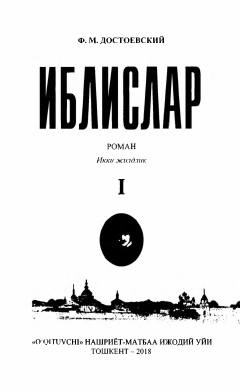

I1Dostoevskiyning 'Iblislar' romani — isyon va g'oyalar to'qnashuvi haqida.
Bu kitob Fyodor Dostoevskiyning mashhur 'Iblislar' romanining Ibrohim G'afurov tomonidan o'zbek tiliga tarjima qilingan birinchi jildidir. Roman XIX asr Rossiyasidagi siyosiy va mafkuraviy kurashlar, yashirin inqilobiy harakatlar va nihilizm g'oyalari fonida inson psixologiyasini chuqur tahlil qiladi. Asarda Stavrogin, Pyotr Verkhovenskiy va boshqa qahramonlar orqali jamiyatdagi isyon va g'oyaviy ziddiyatlar tasvirlanadi.